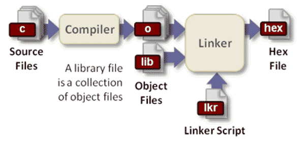

ソースコードを実行するには、まずバイナリの機械語に変換する必要があります。これがコンパイラの役割です。
例えば、次のソースコード（ファイル名はtest.cとします）を見てください。
#include <stdio.h>
int main(void)
{
fputs("Hello, world!\n", stdout);
return 0;
}
実行するには、まずコンパイラで処理する必要があります。
$ gcc test.c $ ./a.out Hello, world!
複雑なプロジェクトの場合、コンパイルプロセスはさらに3つのステップに分ける必要があります。
$ ./configure $ make $ make install
これらのコマンドは一体何をしているのでしょうか？ ほとんどの書籍や資料では、あいまいな説明に留まり、「これでコンパイルできます」と言うだけで、それ以上の説明はありません。
この記事では、コンパイラの動作プロセス、つまり上記の3つのコマンドそれぞれの役割を紹介します。主にAlex Smithの記事『Building C Projects』を参考にしています。ここで断っておきますが、この記事は主にgccコンパイラ、つまりCおよびC++を対象としており、他の言語のコンパイルには必ずしも当てはまりません。

第一歩 設定（configure）
コンパイラは作業を開始する前に、現在のシステム環境を知る必要があります。例えば、標準ライブラリがどこにあるか、ソフトウェアのインストール先がどこか、どのコンポーネントをインストールする必要があるかなどです。これは、コンピュータごとにシステム環境が異なるためです。コンパイルパラメータを指定することで、コンパイラは環境に柔軟に適応し、さまざまな環境で動作する機械語をコンパイルできます。このコンパイルパラメータを決定するステップを「設定（configure）」と呼びます。
これらの設定情報は設定ファイルに保存されますが、慣例としてconfigureというスクリプトファイルに格納されます。通常、これはautoconfツールによって生成されます。コンパイラはこのスクリプトを実行することで、コンパイルパラメータを取得します。
configureスクリプトは、さまざまなシステムの差異を可能な限り考慮し、各種コンパイルパラメータにデフォルト値を提供しています。ユーザーのシステム環境が特別な場合や、特定のニーズがある場合は、手動でconfigureスクリプトにコンパイルパラメータを指定する必要があります。
$ ./configure --prefix=/www --with-mysql
上記のコードはPHPソースコードのコンパイル設定の一例で、ユーザーはインストール後のファイルをwwwディレクトリに保存するように指定し、コンパイル時にmysqlモジュールのサポートを追加しています。
第二歩 標準ライブラリとヘッダファイルの位置を特定する
ソースコードは必ず標準ライブラリ関数（standard library）とヘッダファイル（header）を使用します。これらはシステムの任意のディレクトリに配置できるため、コンパイラは実際にはそれらの位置を自動的に検出できず、設定ファイルを通じてのみ把握できます。
コンパイルの第二歩は、設定ファイルから標準ライブラリとヘッダファイルの位置を把握することです。一般に、設定ファイルは具体的なディレクトリをいくつか列挙したリストを提供します。コンパイル時、コンパイラはこれらのディレクトリを順番に探索して目的のファイルを探します。
第三歩 依存関係を特定する
大規模なプロジェクトでは、ソースコードファイル間に依存関係が存在することがよくあります。コンパイラはコンパイルの順序を決定する必要があります。AファイルがBファイルに依存していると仮定すると、コンパイラは次の2点を保証する必要があります。
（1）Bファイルのコンパイルが完了して初めて、Aファイルのコンパイルを開始する。
（2）Bファイルが変更された場合、Aファイルは再コンパイルされる。
コンパイル順序はmakefileというファイルに保存され、どのファイルを先にコンパイルし、どのファイルを後にコンパイルするかが列挙されています。そしてmakefileファイルはconfigureスクリプトの実行によって生成されます。これが、コンパイル時にconfigureを最初に実行しなければならない理由です。
依存関係を特定すると同時に、コンパイラはコンパイル時にどのヘッダファイルが使用されるかも特定します。
第四歩 ヘッダファイルのプリコンパイル（precompilation）
異なるソースコードファイルが同じヘッダファイル（例えばstdio.h）を参照する可能性があります。コンパイル時、ヘッダファイルも一緒にコンパイルする必要があります。時間を節約するため、コンパイラはソースコードをコンパイルする前にヘッダファイルをコンパイルします。これにより、ヘッダファイルは一度だけコンパイルすればよく、使用するたびに再コンパイルする必要がなくなります。
ただし、ヘッダファイルのすべての内容がプリコンパイルされるわけではありません。マクロを宣言する#defineコマンドはプリコンパイルされません。
第五歩 前処理（Preprocessing）
プリコンパイルが完了すると、コンパイラはソースコード内のヘッダファイルとマクロを置き換え始めます。この記事の冒頭のソースコードを例にとると、stdio.hヘッダファイルが含まれており、置き換え後の状態は次のようになります。
extern int fputs(const char *, FILE *);
extern FILE *stdout;
int main(void)
{
fputs("Hello, world!\n", stdout);
return 0;
}
読みやすくするため、上記のコードではヘッダファイルのうちソースコードに関連する部分、すなわちfputsとFILEの宣言だけを抜粋し、stdio.hの他の部分は省略しています（非常に長いため）。また、上記のコードのヘッダファイルはプリコンパイルされていませんが、実際にはソースコードに挿入されるのはプリコンパイル後の結果です。コンパイラはこのステップでコメントも削除します。
このステップは「前処理」（Preprocessing）と呼ばれます。これが完了すると、いよいよ本当の処理が始まるからです。
第六歩 コンパイル（Compilation）
前処理の後、コンパイラは機械語の生成を開始します。一部のコンパイラには中間ステップが存在し、ソースコードを最初にアセンブリコード（assembly）に変換し、その後アセンブリコードを機械語に変換します。
以下は、この記事の冒頭のソースコードを変換したアセンブリコードです。
.file "test.c"
.section .rodata
.LC0:
.string "Hello, world!\n"
.text
.globl main
.type main, @function
main:
.LFB0:
.cfi_startproc
pushq %rbp
.cfi_def_cfa_offset 16
.cfi_offset 6, -16
movq %rsp, %rbp
.cfi_def_cfa_register 6
movq stdout(%rip), %rax
movq %rax, %rcx
movl $14, %edx
movl $1, %esi
movl $.LC0, %edi
call fwrite
movl $0, %eax
popq %rbp
.cfi_def_cfa 7, 8
ret
.cfi_endproc
.LFE0:
.size main, .-main
.ident "GCC: (Debian 4.9.1-19) 4.9.1"
.section .note.GNU-stack,"",@progbits
この変換後のファイルはオブジェクトファイル（object file）と呼ばれます。
第七歩 リンク（Linking）
オブジェクトファイルはまだ実行できず、さらに実行可能ファイルに変換する必要があります。前のステップの変換結果をよく見ると、stdout関数とfwrite関数が参照されていることがわかります。つまり、プログラムを正常に実行するには、上記のコードに加えて、stdoutとfwriteという2つの関数のコードも必要であり、これらはC言語の標準ライブラリによって提供されます。
コンパイラの次の作業は、外部関数のコード（通常は.libや.aという拡張子のファイル）を実行可能ファイルに追加することです。これをリンク（linking）と呼びます。このように外部関数ライブラリをコピーして実行可能ファイルに追加する方式を静的リンク（static linking）と呼びます。後述しますが、動的リンク（dynamic linking）もあります。
makeコマンドの役割は、第四歩のヘッダファイルのプリコンパイルから、このステップが完了するまでを行うことです。
第八歩 インストール（Installation）
前のステップのリンクはメモリ上で行われます。つまり、コンパイラはメモリ上に実行可能ファイルを生成します。次のステップでは、その実行可能ファイルをユーザーがあらかじめ指定したインストールディレクトリに保存する必要があります。
表面的には、このステップは単純で、実行可能ファイル（関連するデータファイルも含む）をコピーするだけです。しかし実際には、このステップではディレクトリの作成、ファイルの保存、権限の設定などの手順も実行する必要があります。この保存プロセス全体を「インストール」（Installation）と呼びます。
第九歩 オペレーティングシステムとの連携
実行可能ファイルをインストールした後、何らかの方法でオペレーティングシステムに通知し、このプログラムが使用可能であることを認識させる必要があります。例えば、テキスト閲覧プログラムをインストールした場合、txtファイルをダブルクリックすると、そのプログラムが自動的に起動することを期待することがよくあります。
そのためには、オペレーティングシステムにこのプログラムのメタデータ（ファイル名、ファイルの説明、関連付ける拡張子など）を登録する必要があります。Linuxシステムでは、これらの情報は通常/usr/share/applicationsディレクトリ内の.desktopファイルに保存されます。また、Windowsオペレーティングシステムでは、スタートメニューにショートカットを作成する必要もあります。
これらの作業を「オペレーティングシステムとの連携」と呼びます。make installコマンドは、「インストール」と「オペレーティングシステムとの連携」の2つのステップを実行するために使用されます。
第十歩 インストールパッケージの生成
ここまでで、ソースコードのコンパイルプロセス全体はほぼ完了です。しかし、このプロセスを最初から最後まで辛抱強く行うユーザーはごく一部です。実際、ユーザーにソースコードだけを渡す場合、彼らはあなたを不親切な人間だとみなすでしょう。ほとんどのユーザーが求めるのは、すぐに実行できるバイナリの実行可能プログラムです。そのため、開発者は前のステップで生成した実行可能ファイルを、配布可能なインストールパッケージにする必要があります。
したがって、コンパイラにはインストールパッケージを生成する機能も必要です。通常は、実行可能ファイル（関連するデータファイルも含む）を何らかのディレクトリ構造で圧縮ファイルパッケージとして保存し、ユーザーに渡します。
第十一歩 動的リンク（Dynamic linking）
通常、このステップまででプログラムは実行可能です。実行中（runtime）に起こることは、コンパイラとは一切関係ありません。ただし、開発者はコンパイル段階で、実行可能ファイルが外部関数ライブラリをリンクする方法を選択できます。静的リンク（コンパイル時リンク）か、動的リンク（実行時リンク）かです。そこで最後に、動的リンクとは何かについて触れておきます。
先ほど述べたように、静的リンクは外部関数ライブラリを実行可能ファイルにコピーすることです。この方法の利点は、適用範囲が広く、ユーザーのマシンにライブラリファイルが不足していることを心配する必要がないことです。欠点は、インストールパッケージが大きくなり、複数のアプリケーション間でライブラリファイルを共有できないことです。動的リンクはその逆で、外部関数ライブラリはインストールパッケージに含まれず、実行時にのみ動的に参照されます。利点は、インストールパッケージが小さくなり、複数のアプリケーションがライブラリファイルを共有できることです。欠点は、ユーザーが事前にライブラリファイルをインストールしておく必要があり、バージョンとインストール場所が要件を満たしている必要があり、そうでないと正常に実行できません。
現実には、ほとんどのソフトウェアが動的リンクを採用し、共有ライブラリファイルを利用します。この動的共有ライブラリファイルは、Linuxプラットフォームでは拡張子が.soのファイル、Windowsプラットフォームでは.dllファイル、Macプラットフォームでは.dylibファイルです。
原文出典：http://www.ruanyifeng.com/blog/2014/11/compiler.html